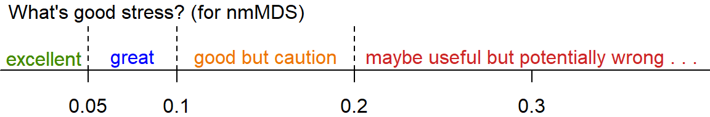

Material to support teaching in Environmental Science at The University of Western Australia
Material to support teaching in Environmental Science at The University of Western Australia
Units ENVT3361, ENVT4461, and ENVT5503
Ordination analysis of eDNA species presence-absence data
Multivariate analysis
Deirdre Gleeson and Andrew Rate
2025-06-19
Learning Outcomes:
- Students are able to appropriately analyse data from an eDNA field sampling campaign;
- Students are able to interpret and understand statistical outputs
from the R package
vegan.
library(vegan) # ecological multivariate analysis
library(flextable) # publication-quality tables
set_flextable_defaults(theme_fun = "theme_booktabs", font.size = 10)
library(officer) # functions to support some flextable options
library(stringr) # character string manipulation
library(viridis) # colourblind-friendly colour palettes
library(scatterplot3d) # used for 3D ordination plots
library(TeachingDemos) # used for shadowtext() functionImport the data
Notes:
- This code imports the data from a file where the samples are rows and the species are columns.
- We convert the column
Siteto a factor (categorical information in R)
git <- "https://github.com/Ratey-AtUWA/Learn-R-web/raw/main/"
eDNA2022 <- read.csv(file = paste0(git,"eDNA2022.csv"))
eDNA2022$Site <- as.factor(eDNA2022$Site)If you have species as rows and samples as columns, we will need to do a bit of wrangling!
speciesAsRows <- read.csv(file = paste0(git,"speciesAsRows.csv"), row.names = 1)
speciesAsRows <- rbind(str_remove(colnames(speciesAsRows), "X"),
speciesAsRows)
row.names(speciesAsRows)[1] <- "SiteID"
speciesAsRows <- as.matrix(speciesAsRows) # convert to matrix for next step
speciesAsRows <- t(speciesAsRows) # t() means transpose
row.names(speciesAsRows) <- NULL
eDNA2022 <- as.data.frame(speciesAsRows)
eDNA2022$Site <- as.factor(eDNA2022$Site)List of all the species and their common names
altnames <-
c("MosqFish", "Goby", "Mullet", "Bream", "BnjoFrog", "GToadlet", "MlrdDuck",
"SpotDove", "SwampHen", "Crake", "WFHeron", "Lorikeet", "Cattle", "Sheep",
"Mouse", "Rat", "HydroidB", "HydroidO", "BwnJelly", "MoonJely", "Dog")
names_table <-
data.frame(Taxonomic = gsub("."," ",colnames(eDNA2022[,6:26]), fixed = T),
Common=c("Mosquito Fish","Bridled Goby","Gray Mullet","Black Bream",
"Western Banjo Frog", "Gunther's Toadlet", "Mallard Duck",
"Spotted Turtle Dove", "Purple Swamphen", "Spotted Crake",
"White Faced Heron", "Rainbow Lorikeet", "Cattle", "Sheep",
"Mouse", "Rat", "HydroidB", "HydroidO", "Brown Jellyfish",
"Moon Jellyfish", "Domestic Dog"),
Abbreviated=altnames)
flextable(names_table,cwidth = c(3,2,2)) |> italic(j=1, italic=T) |> bold(bold=T, part="header") |>
padding(padding=2, part="all") |>
set_caption(caption="Table 1: Taxonomic, common, and abbreviated names for the species detected by eDNA sampling and analysis at Ashfield Flats in 2022.", align_with_table = F, fp_p=fp_par(text.align = "left", padding.bottom = 6))Taxonomic | Common | Abbreviated |
|---|---|---|
Gambusia holbrooki | Mosquito Fish | MosqFish |
Arenigobius bifrenatus | Bridled Goby | Goby |
Mugil cephalus | Gray Mullet | Mullet |
Acanthopagrus butcheri | Black Bream | Bream |
Limnodynastes dorsalis | Western Banjo Frog | BnjoFrog |
Pseudophryne guentheri | Gunther's Toadlet | GToadlet |
Anas platyrhynchos | Mallard Duck | MlrdDuck |
Spilopelia chinensis | Spotted Turtle Dove | SpotDove |
Porphyrio porphyrio | Purple Swamphen | SwampHen |
Porzana tabuensis | Spotted Crake | Crake |
Egretta novaehollandiae | White Faced Heron | WFHeron |
Trichoglossus rubritorquis | Rainbow Lorikeet | Lorikeet |
Bos taurus | Cattle | Cattle |
Ovis sp | Sheep | Sheep |
Mus musculus | Mouse | Mouse |
Rattus sp | Rat | Rat |
Blackfordia polytentaculata | HydroidB | HydroidB |
Obelia bidentata | HydroidO | HydroidO |
Phyllorhiza punctata | Brown Jellyfish | BwnJelly |
Aurelia sp | Moon Jellyfish | MoonJely |
Canis lupus familiaris | Domestic Dog | Dog |
We need to make a subset of our imported data which contains just the species presence/absence information (not sample IDs, sites, reps). We also overwrite the original column names with abbreviated names for better visualisation later.
Difference and Similarity measures
We start by assessing how similar or different our samples are – to do this we need to set up a resemblance matrix. Ideally our 4 replicated samples are more similar to one another than any other samples – but with field sampling this is not always the case. To determine similarity we need to use a similarity measure.
Similarity Measures:
A similarity measure is conventionally defined to take values between 0 and 100% (or 0 and 1) with the ends of the range representing the extreme possibilities:
- Similarity = 100% (or 1) if two samples are totally similar
- Similarity = 0 if two samples are totally dissimilar
What constitutes total similarity, and particularly total dissimilarity, of two samples depends on the specific criteria that are adopted. For example most biologists would feel that similarity should equal zero when two samples have no species in common, and similarity should equal 100% if two samples have identical entries. Similarities are calculated between every pair of samples creating a similarity matrix. There are a number of similarity measures (ways to calculate similarity) which can be used to create this matrix.
Bray Curtis and Jaccard are two different similarity measures we can use -– both are commonly used in ecology and have desirable properties – similarity is calculated based on the taxa that samples have in common. Similarity takes a value of 0 if two samples have no species in common and joint absences have no effect (i.e. a taxon jointly absent in two samples does not contribute to its similarity). The difference between them is that Bray Curtis will use abundance information (where it is present) in assessing similarity, whereas Jaccard converts abundances to binary (i.e. 0s and 1s, with 1 representing presence and 0 meaning absence) to assess similarity. In our case it does not matter much which we use, since we have already converted to binary – so let’s proceed with Jaccard.
Ecological Question – If two samples have no taxa present each does this make them more similar to one another?
To assess similarity in the vegan R
package carry out the following steps. The output shows the first few
rows and columns of the dissimilarity matrix; each number represents the
Jaccard distance between samples based on the presence or absence of
species.
AF_diss_all <- vegdist(allSpecies,
distance = "jaccard") # default is distance = "bray"
# just look at the top corner of the dissimilarity matrix:
txt0 <- capture.output(print(AF_diss_all, digits=3)); txt0[1:10]; rm(txt0)## 1 2 3 4 5 6 7 8 9 10 11
## 2 0.0769
## 3 0.2727 0.1667
## 4 0.0769 0.0000 0.1667
## 5 0.3333 0.3846 0.6364 0.3846
## 6 0.3333 0.3846 0.6364 0.3846 0.0000
## 7 0.3333 0.3846 0.6364 0.3846 0.0000 0.0000
## 8 0.2727 0.3333 0.6000 0.3333 0.0909 0.0909 0.0909
## 9 0.8000 0.6364 0.5556 0.6364 0.6000 0.6000 0.6000 0.7778
## 10 0.6000 0.6364 0.5556 0.6364 0.6000 0.6000 0.6000 0.7778 0.2500
## 11 0.8000 0.6364 0.5556 0.6364 0.8000 0.8000 0.8000 1.0000 0.2500 0.2500Ordinations
Next we will construct our ordination – a procedure to visualise the similarity matrix by simplifying (scaling) it into fewer dimensions than our original data. This reduction of dimensions is useful as the original data will have as many dimensions as there are species, which is impossible to visualise! There are two different types of ordination that we will use: Multi-Dimensional-Scaling (nmMDS) and Principal Coordinates Analysis (PCO). If you have previously used PCA – Principal Component Analysis – you may be familiar with ordination methods. PCA is useful for environmental datasets – these are represented by a similarity matrix derived via use of Euclidean Distance as a measure of similarity. PCA is more suited to environmental variables because of the type of data – there are no large blocks of zeros (usually) and it is no longer necessary to select a similarity measure that ignores joint absences. When looking at ordination plots in general you should note that sample points that are spatially located together share common characteristics and sample points that are distantly located from one another share less characteristics. This holds whether we are working with environmental variables (pH, EC, moisture content, heavy metals etc.) or species abundances.
The main difference between MDS and PCO relates to the underlying use of the resemblance matrix.
MDS takes the similarity measures calculated by Jaccard or Bray Curtis and ranks them in order. Thus pairs are samples are ranked according to highest to lowest similarity and are thus plotted in multidimensional space. Since it uses the rank and not the actual values, it's commonly called "non-[para]metric" multi-dimensional scaling, or nmMDS.
PCO takes the actual values of the underlying measure of similarity and plots pairs of samples in multi-dimensional space. It will then look for the direction (vector) of greatest variance in the multi-dimensional "cloud" of points, which becomes the first PCO dimension. Successive dimensions explain the most possible remaining variance, until all variance is accounted for. So, many PCO dimensions are possible, but usually only the first 2 or 3 are useful for visualizing our data.
For both types of ordinations the software attempts to preserve the similarity of each pair of samples – while this is feasible in multidimensional space, in order for us to view the ordination we see this in 2 or 3 dimensions – thus the software attempts to preserve as much as is feasible of the sample pair similarity as calculated – but in reality we need to consider how much the 2- dimensional view is a true representation of the data set. In nmMDS we use the stress value to evaluate this, in PCO we can plot multiple axes, i.e. axis 1 vs. axis 2, axis 2 vs. axis 3 and so on. The amount of variance explained in each PCO dimension is called the eigenvalue, and the output will include these values; the greater the eigenvalue, the more useful a PCO dimension is. In practice, much of the variability is often explained in the first two axes (i.e. 2 dimensions) and we will limit our analysis to these axes for this dataset.
Non-metric multidimensional scaling (nmMDS)
In vegan this is done using the metaMDS() function. We
need to specify an input matrix of just the species data (e.g.
allSpecies which we made earlier). The default is to find 2
dimensions (k) using a Bray-Curtis dissimilarity matrix,
but we can set these options to different values using k =
and distance = options. The dissimilarity matrix is
calculated within the metaMDS() function, so for
consistency we set distance = "jaccard".
# default with 2 dimensions
AF_nmds_all <- metaMDS(allSpecies, distance = "jaccard")
# 3 dimensions for comparison
AF_nmds_all3 <- metaMDS(allSpecies, k=3, distance = "jaccard")##
## Call:
## metaMDS(comm = allSpecies, distance = "jaccard")
##
## global Multidimensional Scaling using monoMDS
##
## Data: allSpecies
## Distance: jaccard
##
## Dimensions: 2
## Stress: 0.1554552
## Stress type 1, weak ties
## Best solution was repeated 2 times in 20 tries
## The best solution was from try 8 (random start)
## Scaling: centring, PC rotation, halfchange scaling
## Species: expanded scores based on 'allSpecies'The 2D stress value is ≃ 0.16. This can be interpreted as follows:

The stress value is relatively high as we are dealing with a large
number of samples with lots of values of 0 or
1 in a 2 dimensional space – resulting in a challenging
similarity environment.
\(\Rightarrow\) Check the stress value of the 3-D ordination – is it lower? Remember that we made this object in the code block above:
Figure 1 below mimics the nmmds plot in Deirdre's original
PRIMER handout (note that the sign of dimension MDS2 is
reversed)
palette(c("black", viridis(10, alpha=0.75))) # a viridis palette
par(mfrow=c(1,2), mar=c(3,3,2,0.5), mgp=c(1.5,0.2,0), tcl=-0.2, font.lab=2)
plot(AF_nmds_all$points, pch=c(rep(21:25, 2),21)[eDNA2022$Site],
xlim = c(-1.6,2.2), ylim = c(1.2,-1.2),
bg=seq(1,11)[eDNA2022$Site],
cex = 1.4, main = "All species", col.main = "steelblue")
text(AF_nmds_all, display = "species", col = "#a00060a0", font=3, cex = 1)
mtext("(a)", 3, -1.2, adj=0.98, font=2, cex=1.4)
legend("bottomright", box.col="grey", bg="transparent", ncol=4, title = "Site",
legend=seq(1,11), pch=c(rep(21:25, 2),21),
inset=0.01, pt.bg=seq(1,11), pt.cex=1.4, cex=1.2)Figure 1: (a) 2D NMDS ordination plot based on Jaccard (dis)similarities in eDNA species presence-absence data for water sampled from Ashfield Flats in 2022; (b) for reference, an Ashfield Flats map showing Site locations.
You can play around with the code for Figure 1 to make additional changes – you won’t break it by trying, so play around as much as you like. You will notice that there are only 2 points for Site 2 – this is because the points are overlaid on top of one another – as we are picking up only a few taxa some of the samples are very similar to one another. However we can generally see that there are sample groupings and that likely location has an effect (i.e. samples that are from the same location are closer together). We will test this statistically a little later.
We can also generate a form of 3-dimensional plot using the
scatterplot3d() function from the
scatterplot3d R package. Figure 2 shows a 3D plot for the
3-dimension NMDS generated above.
palette(c("black", viridis(10))) # a viridis palette
par(mfrow=c(1,1), mar=c(3,3,2,0.5), mgp=c(1.5,0.2,0), tcl=0.2, font.lab=2)
s3d <- scatterplot3d(x=AF_nmds_all3$points[,1], y=AF_nmds_all3$points[,2],
z=AF_nmds_all3$points[,3],
xlab="MDS1", ylab="MDS2", zlab="MDS3",
angle=25, mar=c(4,4,1,2), type="h", col.axis="darkgray", color="gray",
pch=c(rep(21:25, 2),21)[eDNA2022$Site],
bg=c(1:11)[eDNA2022$Site], cex.symbols=1.4)
legend(s3d$xyz.convert(1.7, 0.75, 1.6), legend = levels(eDNA2022$Site), title="Site",
bg="#ffffffa0", box.col="transparent",
pt.bg= c(1:11), pt.cex=1.4, col="gray", pch=c(rep(21:25, 2),21))Figure 2: 2D NMDS ordination plot based on Jaccard (dis)similarities in eDNA species presence-absence data for water sampled from Ashfield Flats in 2022.
Principal Coordinates (PCoA) Analysis
In the 'vegan' package we use Weighted classical multidimensional
scaling, also known as Weighted Principal Coordinates Analysis.
This is implemented using the function wcmdscale(). We plot
the PCO output in Figure 3 below.
## Call: wcmdscale(d = vegdist(allSpecies), eig = TRUE)
##
## Inertia Rank
## Total 8.169
## Real 10.272 15
## Imaginary -2.103 21
##
## Results have 44 points, 15 axes
##
## Eigenvalues:
## [1] 3.377 2.101 1.537 1.297 0.613 0.434 0.342 0.214 0.158 0.100
## [11] 0.039 0.032 0.014 0.010 0.004 -0.006 -0.007 -0.009 -0.016 -0.021
## [21] -0.027 -0.035 -0.046 -0.052 -0.059 -0.074 -0.089 -0.094 -0.115 -0.134
## [31] -0.143 -0.163 -0.190 -0.212 -0.242 -0.371
##
## Weights: ConstantFigure 3: Basic principal coordinates analysis (PCoA) ordination plot based on Jaccard (dis)similarities in eDNA species presence-absence data for water sampled from Ashfield Flats in 2022.
Figure 3 is a basic PCoA plot based on all species, showing the locations of individual samples by row number.
We can make more informative plots by using the information stored in
the output object (AF_pco_all) – see Figure 4.
palette(c("black", plasma(10))) # a viridis palette
par(mfrow = c(1,1), mar = c(3,3,1,1), mgp = c(1.5,0.2,0), tcl = 0.25,
font.lab = 2, xpd=T)
s3d <- scatterplot3d(x=AF_pco_all$points[,1], y=AF_pco_all$points[,2], z=AF_pco_all$points[,3],
xlab="Dim 1", ylab="Dim 2", zlab="Dim 3",
angle=65, mar=c(4,4,3,2), type="h", col.axis="gray", color="#e0e0e0",
pch=c(rep(21:25, 2),21)[eDNA2022$Site],
bg=c(1:11)[eDNA2022$Site], cex.symbols=1.4,
xlim=c(-0.6,0.4),ylim=c(-0.6,0.4),zlim=c(-0.3,0.4))
legend(s3d$xyz.convert(-1.5, 0.4, 0.7), legend = levels(eDNA2022$Site), title="Site",
horiz=TRUE, cex=0.8, bg="#ffffffa0", box.col="transparent",
pt.bg= c(1:11), pt.cex=1.1, col="gray", pch=c(rep(21:25, 2),21))Figure 4: Principal coordinates (PCoA) ordination plot in 3D based on Jaccard (dis)similarities in eDNA species presence-absence data for water sampled from Ashfield Flats in 2022.
PERMANOVA
In order to test where location has a significant effect on the taxa at our field site we need to run an ANOVA – however as we have multiple species to test together we cannot run a basic ANOVA – we must run a multivariate permutational ANOVA or PERMANOVA.
PERMANOVA shares some resemblance to ANOVA where they both measure the sum-of-squares within and between groups, and make use of an F test to compare within-group to between-group variance. However, while ANOVA bases the significance of the result on assumption of normality, PERMANOVA draws tests for significance by comparing the actual F test result to that gained from random permutations of the objects between the groups. Moreover, whilst PERMANOVA tests for similarity based on a chosen distance measure, ANOVA tests for similarity of the group averages.
We could calculate a univariate measure of diversity (a Simpson or Shannon index, for example) and run an ANOVA on that univariate value. In doing so, however, we are reducing the complex dataset to a simplified version and losing discrete information in the process. Remember that ANOVA also has an underlying assumption of normality – generally speaking, biological species data are not normally distributed and thus do not satisfy this assumption. This makes applying a permutational ANOVA a much better option. Before the advent of computational capacity a permutational ANOVA would have taken quite some time to run – luckily now it only takes a matter of seconds to minutes depending on the complexity of the dataset.
In the vegan package, the adonis2()
function implements Permutational Multivariate Analysis of Variance
Using Distance Matrices (i.e. PERMANOVA).
We use a formula in the adonis2() function which
expresses the community matrix (i.e. the columns of species
presence or absence) as a function of a factor (in this case,
Site).
AF_permanova_all <- adonis2(eDNA2022[,6:26] ~ Site, data = eDNA2022,
permutations = 9999)
AF_permanova_all## Permutation test for adonis under reduced model
## Terms added sequentially (first to last)
## Permutation: free
## Number of permutations: 9999
##
## adonis2(formula = eDNA2022[, 6:26] ~ Site, data = eDNA2022, permutations = 9999)
## Df SumOfSqs R2 F Pr(>F)
## Site 10 7.7475 0.94839 60.644 1e-04 ***
## Residual 33 0.4216 0.05161
## Total 43 8.1691 1.00000
## ---
## Signif. codes: 0 '***' 0.001 '**' 0.01 '*' 0.05 '.' 0.1 ' ' 1P value by permutation =0.0001 indicating a significant
effect of location on the community composition of our samples. Note
that 9999 permutations were undertaken to arrive at this value.
The output from the pairwise.adonis2() function is quite
lengthy (to see it, run print(AF_PWpermanova_all)). We can
tidy it up for clarity with a custom function (plainPW2() –
see output below).
source("https://github.com/Ratey-AtUWA/eDNA/raw/master/FUN_pairwise_adonis2.R")
source("https://github.com/Ratey-AtUWA/Learn-R/raw/main/plain-pairwise-FUNCTION2.R")
AF_PWpermanova_all <- pairwise.adonis2(eDNA2022[,6:26] ~ Site, data = eDNA2022)
AF_plainPW_all <- plainPW2(AF_PWpermanova_all, ns.repl=TRUE, alpha=0.05) # see custom function code below
s0 <- data.frame(Site=1:10)Site | 2 | 3 | 4 | 5 | 6 | 7 | 8 | 9 | 10 | 11 |
|---|---|---|---|---|---|---|---|---|---|---|
1 | 0.033 | 0.021 | 0.031 | 0.035 | 0.025 | 0.023 | 0.042 | 0.036 | 0.025 | 0.032 |
2 | 0.036 | 0.038 | 0.025 | 0.021 | 0.024 | 0.016 | 0.021 | 0.024 | 0.027 | |
3 | 0.023 | 0.027 | 0.041 | 0.040 | 0.024 | 0.036 | 0.034 | 0.033 | ||
4 | 0.033 | 0.030 | 0.030 | 0.040 | 0.043 | 0.034 | 0.028 | |||
5 | 0.030 | 0.035 | 0.024 | 0.025 | 0.033 | 0.021 | ||||
6 | 0.030 | 0.026 | 0.033 | ns | 0.024 | |||||
7 | 0.029 | 0.031 | 0.033 | 0.024 | ||||||
8 | 0.036 | 0.034 | 0.033 | |||||||
9 | 0.03 | 0.033 | ||||||||
10 | 0.038 |
Notes:
- the pairwise Adonis2 source code is by Pedro Martinez Arbizu at https://github.com/pmartinezarbizu/pairwiseAdonis.
- The code for the
plainPW2()function is as follows:
# function inputs output object from Pedro Martinez Arbizu's pairwise.adonis2()
# code at https://github.com/pmartinezarbizu/pairwiseAdonis
plainPW2 <- function(x, ns.repl=TRUE, alpha=0.05){
tablout <- data.frame(Pair=rep(NA, length(x)-1),
P_value=rep(NA, length(x)-1))
for(i in 2:length(x)){
tablout[i-1,] <- c(names(x)[i],
as.data.frame(x[names(x)[i]])[1,5])
}
n0 <- (ceiling(sqrt(length(x)*2)))-1
ptable <- as.data.frame(matrix(rep(NA, n0^2), ncol = n0))
colnames(ptable) <- c(1:n0)+1
r0 <- 1 ; rn <- n0
for(i in 1:n0){
ptable[i,] <- c(rep(NA,n0-((rn-r0)+1)),as.numeric(c(tablout[r0:rn,2])))
r0 <- rn+1
rn <- rn+(n0-i)
}
if(ns.repl==TRUE){
for(i in 1:ncol(ptable)){
ptable[which(ptable[,i]>alpha),i] <- "ns"
}
}
return(ptable)
}You can also get the plainPW2() function code at github.com/Ratey-AtUWA/.../plain-pairwise-FUNCTION2.R.
Additional options for vegan ordination plots
If we have factors (categories) in our data it's useful to show these using our multivariate ordination plots. We can make a rough categorisation of Sites based on their site location, for example as shown in the code below and the map in Figure 5:
eDNA2022$Zone <- cut(eDNA2022$Northing, breaks = c(1,6468100,9999999),
labels=c("South","North"))
eDNA2022$Zone <- factor(eDNA2022$Zone, levels=c("North","South")) # re-orderFigure 5: Map of the Ashfield Flats study area showing eDNA water sample locations categorised into South and North zones.
We can then add geometric shapes on our ordination plots to emphasise the positions of different groups (i.e. factor levels) within the ordination dimensions' space (Figure 6).
Click to show code
These plot features are really only applicable to two-dimensional (x-y) plots – 3D geometric shapes could be hard to interpret on a 3D plot!.
# plot (a) ellipses
par(mar=c(3,3,1,1), mgp=c(1.7,0.3,0), tcl=0.25, lend=2, ljoin=1, font.lab=2,
mfrow=c(2,2))
palette(c("black", inferno(6)[2:6],"white"))
plot(AF_nmds_all, display="sites", cex=1.4, xlim=c(-1.35,1.65), ylim=c(-1.5,1.5))
mtext("(a)", side=3, line=-1.6, adj=0.03, cex=1.4)
points(AF_nmds_all$points, col=c(2,5)[eDNA2022$Zone], pch=19, cex=1.4)
ordiellipse(AF_nmds_all, groups=eDNA2022$Zone, col=c(2,5), lwd=2,
kind = "sd", conf=0.75)
shadowtext(tapply(AF_nmds_all$points[,1], eDNA2022$Zone, mean),
tapply(AF_nmds_all$points[,2], eDNA2022$Zone, mean),
labels=levels(eDNA2022$Zone), cex=1.2, col=c(2,5), bg=7, r=0.2)
legend("bottomright", bty="n", legend=levels(eDNA2022$Zone), title="Zone",
col=c(2,5), pt.bg=c(2,4,5), lty=1, lwd=2, pch=NA, pt.cex=1.5, cex=1.2)
legend("bottomright", bty="n", legend=levels(eDNA2022$Zone), col=7,
pt.bg=c(2,5), lty=NA, lwd=2, pch=21, pt.cex=2.2, cex=1.2)
# plot (b) convex hulls
# par(mar=c(3,3,1,1), mgp=c(1.7,0.3,0), tcl=0.25, lend=2, ljoin=1, font.lab=2)
palette(c("black", magma(5)[2:5],"white"))
plot(AF_nmds_all, display="sites", cex=1.4, xlim=c(-1.35,1.65), ylim=c(-1.5,1.5))
ordihull(AF_nmds_all, groups=eDNA2022$Zone,
col=c(2,4), lwd=2, label=F)
points(AF_nmds_all$points, bg=c(2,4)[eDNA2022$Zone],
pch=c(21,22)[eDNA2022$Zone], cex=2, col=6)
shadowtext(tapply(AF_nmds_all$points[,1], eDNA2022$Zone, mean),
tapply(AF_nmds_all$points[,2], eDNA2022$Zone, mean),
labels=levels(eDNA2022$Zone), cex=1.2, col=c(2,4), bg=6, r=0.2)
mtext("(b)", side=3, line=-1.6, adj=0.03, cex=1.4)
legend("bottomright", bty="n", legend=levels(eDNA2022$Zone), title="Zone",
col=c(2,4), pt.bg=c(2,4), lty=1, lwd=2, pch=NA, pt.cex=1.5, cex=1.2)
legend("bottomright", bty="n", legend=levels(eDNA2022$Zone), col=6,
pt.bg=c(2,4), lty=NA, lwd=2, pch=c(21,22), pt.cex=2.2, cex=1.2)
# (c) spiders
palette(c("black", plasma(6)[2:6],"white"))
plot(AF_nmds_all, display="sites", cex=0.8, xlim=c(-1.35,1.65), ylim=c(-1.5,1.5))
mtext("(c)", side=3, line=-1.6, adj=0.03, cex=1.4)
points(AF_nmds_all$points, col=c(2,4)[eDNA2022$Zone], pch=19, cex=1.4)
ordispider(AF_nmds_all, groups=eDNA2022$Zone, col=c(2,4), lwd=1)
shadowtext(tapply(AF_nmds_all$points[,1], eDNA2022$Zone, mean),
tapply(AF_nmds_all$points[,2], eDNA2022$Zone, mean),
labels=levels(eDNA2022$Zone), cex=1.2, col=c(2,4), bg=7, r=0.2)
legend("bottomright", bty="n", legend=levels(eDNA2022$Zone), title="Zone",
col=c(2,4), pt.bg=c(1,3,5), lty=1, lwd=2, pch=NA, pt.cex=1.5, cex=1.2)
legend("bottomright", bty="n", legend=levels(eDNA2022$Zone), col=7,
pt.bg=c(2,4), lty=NA, lwd=2, pch=21, pt.cex=2.2, cex=1.2)
plot(c(0,1),c(0,1),bty="n",axes=F,ann=F,type="n")
text(0.5,0.5, cex=1.5, col=3, font=3,
labels = "The categories\n'North' and 'South' may\nnot be useful zones!")
Figure 6: Ordination plots made using a combination of functions from
the vegan package and base-R, showing (a) 75% CI ellipses
around Zone groups; (b) convex hulls around Site groups; (c) ‘spiders’
around Zone groups. The shadowtext() function from the
teachingDemos:: package is used for clearer labels. The
Zones in this Figure are just for illustration and based on whether the
site is south or north of an arbitrary coordinate, and may make no
sense!
Extras
Stress plot for nmMDS based on Jaccard dissimilarities, all species
par(mfrow=c(1,1), mar=c(3,3,0.5,0.5), mgp=c(1.5,0.2,0), tcl=0.2, font.lab=2)
stressplot(AF_nmds_all)Figure 6: Stress plot showing the goodness-of-fit between actual dsiimilarity for the Ashfield Flats 2022 eDNA data and dissimilarities predicted by NMDS ordination distances.
Analysis with just the aquatic species
These are: Gambusia holbrooki, Arenigobius bifrenatus, Mugil cephalus, Acanthopagrus butcheri, Limnodynastes dorsalis, Pseudophryne guentheri, Blackfordia polytentaculata, Obelia bidentata, Phyllorhiza punctata, Aurelia sp.
## MosqFish Goby Mullet Bream BnjoFrog GToadlet HydroidB HydroidO BwnJelly MoonJely
## 1 1 0 0 0 1 0 0 0 0 0
## 2 1 0 0 0 1 1 0 0 0 0
## 3 1 0 0 0 0 1 0 0 0 0
## 4 1 0 0 0 1 1 0 0 0 0
## 5 1 0 0 0 1 0 0 0 0 0
## 6 1 0 0 0 1 0 0 0 0 0for interest look at the dissimilarity matrix
AF_diss_aquat <- vegdist(fish,
distance = "bray")
txt0 <- capture.output(print(AF_diss_aquat,digits=3));txt0[1:10];rm(txt0)## 1 2 3 4 5 6 7 8 9 10 11 12 13 14 15 16
## 2 0.2000
## 3 0.5000 0.2000
## 4 0.2000 0.0000 0.2000
## 5 0.0000 0.2000 0.5000 0.2000
## 6 0.0000 0.2000 0.5000 0.2000 0.0000
## 7 0.0000 0.2000 0.5000 0.2000 0.0000 0.0000
## 8 0.0000 0.2000 0.5000 0.2000 0.0000 0.0000 0.0000
## 9 0.5000 0.2000 0.0000 0.2000 0.5000 0.5000 0.5000 0.5000
## 10 0.3333 0.5000 0.3333 0.5000 0.3333 0.3333 0.3333 0.3333 0.3333
## 11 1.0000 0.5000 0.3333 0.5000 1.0000 1.0000 1.0000 1.0000 0.3333 1.0000##
## Call:
## metaMDS(comm = fish, distance = "jaccard", trymax = 500)
##
## global Multidimensional Scaling using monoMDS
##
## Data: fish
## Distance: jaccard
##
## Dimensions: 2
## Stress: 0.08664754
## Stress type 1, weak ties
## Best solution was repeated 1 time in 20 tries
## The best solution was from try 17 (random start)
## Scaling: centring, PC rotation, halfchange scaling
## Species: expanded scores based on 'fish'par(mfrow=c(1,1), mar=c(3,3,2,0.5), mgp=c(1.5,0.2,0), tcl=0.2, font.lab=2)
plot(AF_nmds_aquat, type="p",display = "sites", cex = 1.2)
text(AF_nmds_aquat, display = "species", col = "royalblue", cex = 0.8)
Figure 7: Basic NMDS plot showing observations as symbols and species as text. Presence-absence data from eDNA sampling and analysis at Ashfield Flats.
alternative to vegan plots
palette(c("black", plasma(10))) # a viridis palette
par(mfrow=c(1,1), mar=c(3,3,0.5,5), mgp=c(1.5,0.2,0), tcl=0.2, font.lab=2, xpd=T)
plot(AF_nmds_aquat$points, pch=c(rep(21:25, 2),21)[eDNA2022$Site],
xlim = c(-1.2,1.8),
bg = seq(1,11)[eDNA2022$Site],
cex = 1.2, col.main = "steelblue")
text(AF_nmds_aquat, display = "species", col = "grey33", font=3, cex = 0.8)
legend(2.2,1.2, legend=seq(1,11), bty="n", title="Site", cex=1, pt.cex=1.2,
pch=c(rep(21:25, 2),21), pt.bg=1:11)Figure 8: Two-dimensional non-metric multidimensional scaling (NMDS) plot showing observations as symbols and species as text located in MDS2 vs. MDS1 space. Presence-absence data for aquatic species only from eDNA sampling and analysis at Ashfield Flats.
Detrended correspondence analysis - all species
##
## Call:
## decorana(veg = allSpecies)
##
## Detrended correspondence analysis with 26 segments.
## Rescaling of axes with 4 iterations.
## Total inertia (scaled Chi-square): 2.1786
##
## DCA1 DCA2 DCA3 DCA4
## Eigenvalues 0.5537 0.3602 0.2545 0.17011
## Additive Eigenvalues 0.5537 0.3596 0.2461 0.16058
## Decorana values 0.5632 0.3154 0.1915 0.07493
## Axis lengths 3.2842 2.6926 2.1577 1.75539par(mfrow=c(1,1), mar=c(3,3,0.5,0.5), mgp=c(1.5,0.2,0), tcl=0.2, font.lab=2)
plot(AF_dca_all, col=c(1,4))Figure 9: Two-dimensional detrended correspondence analysis (DCA) plot showing observations as symbols and species as text. Presence-absence data from water sampling and eDNA analysis at Ashfield Flats.
For comparison if wanted: nmMDS again with Bray-Curtis distances
##
## Call:
## metaMDS(comm = allSpecies)
##
## global Multidimensional Scaling using monoMDS
##
## Data: allSpecies
## Distance: bray
##
## Dimensions: 2
## Stress: 0.1554552
## Stress type 1, weak ties
## Best solution was repeated 4 times in 20 tries
## The best solution was from try 14 (random start)
## Scaling: centring, PC rotation, halfchange scaling
## Species: expanded scores based on 'allSpecies'The results should be identical to nmMDS with Jaccard, since the community matrix is already converted to presence-absence (binary ones and zeros).
References and R Packages
Dunnington, Dewey (2017). prettymapr: Scale Bar,
North Arrow, and Pretty Margins in R. R package version 0.2.2. CRAN.R-project.org/package=prettymapr.
Giraud T (2021). maptiles: Download and Display Map
Tiles. R package version 0.3.0, CRAN.R-project.org/package=maptiles.
Garnier S, Ross N, Rudis R, Camargo AP, Sciaini M, Scherer C (2021).
Rvision - Colorblind-Friendly Color Maps for R
(viridis). R package version 0.6.2. sjmgarnier.github.io/viridis/
Gohel D, Skintzos P (2022). flextable: Functions for
Tabular Reporting. R package version 0.8.1, CRAN.R-project.org/package=flextable.
Oksanen J, Simpson G, Blanchet F, Kindt R, Legendre P, Minchin P,
O’Hara R, Solymos P, Stevens M, Szoecs E, Wagner H, Barbour M, Bedward
M, Bolker B, Borcard D, Carvalho G, Chirico M, De Caceres M, Durand S,
Evangelista H, FitzJohn R, Friendly M, Furneaux B, Hannigan G, Hill M,
Lahti L, McGlinn D, Ouellette M, Ribeiro Cunha E, Smith T, Stier A, Ter
Braak C, Weedon J (2022). vegan: Community Ecology
Package. R package version 2.6-2, CRAN.R-project.org/package=vegan.
Pebesma, E., 2018. Simple Features for R: Standardized Support for
Spatial Vector Data. The R Journal 10(1),
439-446, doi:10.32614/RJ-2018-009. (package
sf)
Wickham H (2022). stringr: Simple, Consistent
Wrappers for Common String Operations. R package version 1.4.1, CRAN.R-project.org/package=stringr.
CC-BY-SA • All content by Ratey-AtUWA. My employer does not necessarily know about or endorse the content of this website.
Created with rmarkdown in RStudio. Currently using the free yeti theme from Bootswatch.